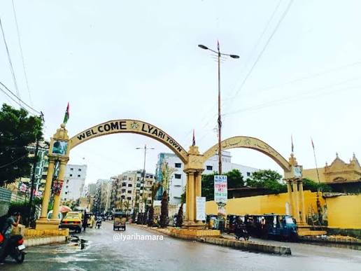

Lyari Heritage

Lyari is one of the oldest neighborhoods in Karachi. It lies along the Lyari River and has been home to Baloch, Sindhi, Kutchi and many other communities for generations.
Football and Boxing
Lyari is well known for its love of football and boxing. Many local players and boxers have come from its narrow streets and small grounds.
Music and Culture
The area has a strong cultural life, with its own food, music and festivals. These traditions are an important part of Karachi's identity.
Why It Matters
Lyari is often only mentioned in the news for bad reasons. This page is a reminder that the neighborhood also has a rich history and talented people.